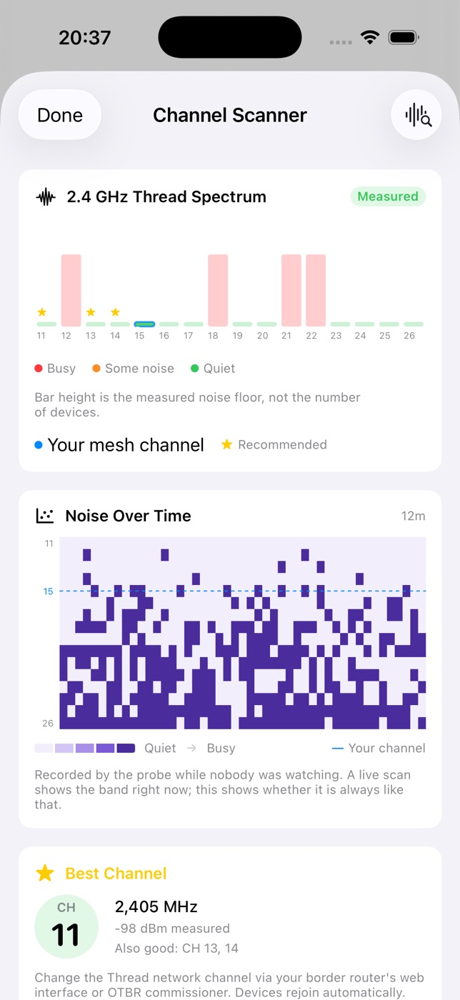
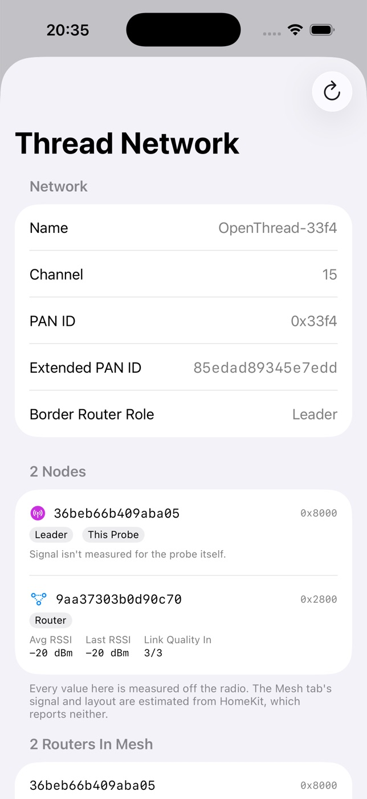
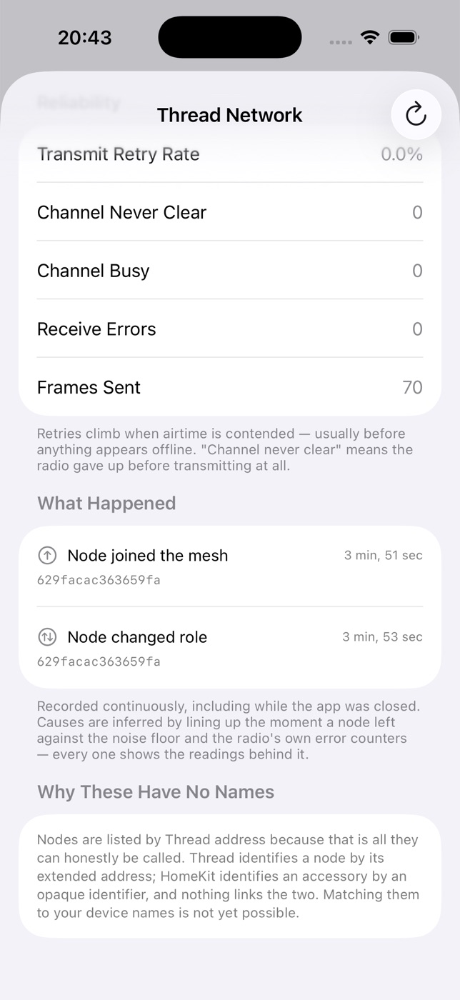

The problem
“It worked yesterday.”
A sensor stops reporting. An hour later it comes back. Your hub says everything is fine, because from where it stands everything is. The information that would explain it — signal, routing, what else was on the air — is never shown to you at all.
Health grade
EstimatedAn A–F score with the specific issues pulling it down, not just a number.
Mesh map
EstimatedEvery device grouped by room, showing how each one reaches a border router.
Room survey
EstimatedWalk a room, get a coverage grade. Drivable from your wrist so both hands stay free.
Offline alerts
MeasuredKnow the moment a device drops, with a grace period and quiet hours you set.
Device history
Estimated30 days of signal trend, uptime and firmware changes for every accessory.
Watch & iPad
Grade and complications on the wrist; a proper sidebar layout on iPad, not a stretched phone.
Where those tags come from
Most Thread apps guess. This one admits it.
iOS gives third-party apps no radio signal strength for Thread accessories, no parent-child relationships and no routing table. Any app showing you dBm for a HomeKit device is showing you something it cannot read.
ThreadMapper measures how quickly each accessory answers, calls that an estimate wherever it appears, and infers the mesh layout from what HomeKit does expose. It works, and it is honest about being an inference.
An OpenThread Border Router alone does not fix this.
Its REST API reports real network facts — name, channel, PAN ID — and ThreadMapper uses them. But we tested its diagnostics endpoints against a live two-node mesh: the requests complete and return nothing usable. Per-node routing is not available that way, whatever the documentation implies.
Which is why the probe exists.
The probe
A small box that stops the guessing.
Run a lightweight agent on a Raspberry Pi with an 802.15.4 dongle and it joins your Thread mesh as a real node. From inside, everything the phone cannot see becomes readable — and because it never sleeps, it sees the 3 a.m. failures you don't.
Noise over time
ProbeA waterfall of the whole band. You can see the microwave at dinner and the neighbour's Wi-Fi in the evening.
Why it dropped
ProbeDepartures lined up against noise and radio error counters — with the readings shown, and “no clear cause” when there isn't one.
While you were away
ProbeWhat happened since you last opened the app. Silent when nothing did.
Reliability counters
ProbeTransmit retries and channel-busy failures — congestion shows here long before anything looks offline.
The agent is open source and runs on hardware you already own — a Pi 4 or 5 plus a
dongle costs about the price of a takeaway.
Setup guide →
Read that first: a Raspberry Pi has no Thread radio of its own, and joining an
existing Apple or Google mesh needs credentials those platforms don't yet let you
export. It is not a product you can buy — it's a build.
In the app
Screens






Privacy
No account. No servers. No analytics.
- Nothing to sign up for. The app has no login because it has nowhere to log in to.
- No tracking of any kind. No analytics, no third-party SDKs — the only network request the app makes is to a border router or probe you configured yourself.
- iCloud sync is yours, not ours. Optional, off by default, and it uses your own private iCloud. Your notes and settings follow you; we never see them.
- AI runs on device. On iOS 26 with Apple Intelligence. Your network is never uploaded to be summarised.
Signal history deliberately doesn't sync.
Readings depend on where the device taking them is standing. Merging an iPad in a drawer with an iPhone in your pocket would produce a history describing a place nobody is. Notes and settings sync; measurements stay put.
Pro
One purchase. Not a subscription.
- AI Insights and Network Assistant — reads your device's actual history, on device.
- Resilience Simulator — which devices would be orphaned if a specific router failed.
- 30-day timeline and topology time-lapse.
- Diagnostic PDF export for installers, landlords or your own records.
- Weekly reports, streaks, scene triggers and Watch complications.
Probe features aren't behind the paywall.
If you've gone to the trouble of building a probe, hitting a second paywall would be a poor way to say thank you. Everything the probe unlocks is included.
Getting started
What you need
A home with at least one Thread border router — a HomePod mini, Apple TV 4K or similar — since ThreadMapper reads your network through HomeKit. AI features need iOS 26 on an Apple Intelligence–capable device. The probe is entirely optional.
Want to look around first? Turn on Demo Mode and the whole app runs on a simulated network — no hardware, no HomeKit, nothing to set up.